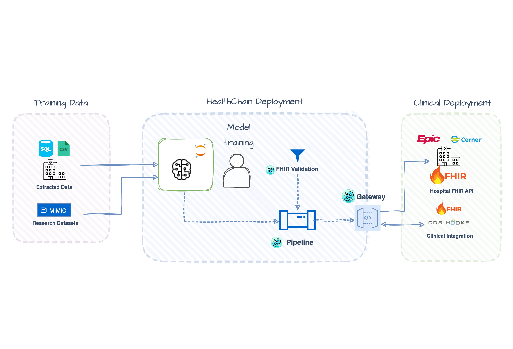

Deploy ML Models: Real-Time Alerts & Batch Screening
You trained a model on CSVs. Now you need to deploy it against FHIR data from EHRs. This tutorial shows how to bridge that gap with two production patterns: real-time CDS Hooks alerts and batch FHIR Gateway screening—both using the same model and a simple YAML schema that maps FHIR resources to your training features.
Check out the full working examples:

When to Use Each Pattern
| Pattern | Trigger | Output | Best For |
|---|---|---|---|
| CDS Hooks | Clinician opens chart | Alert cards in EHR UI | Point-of-care decision support |
| FHIR Gateway | Scheduled job / API call | RiskAssessment resources | Population screening, quality measures |
Both patterns share the same trained model and feature extraction—only the integration layer differs.
Setup
Install Dependencies
Train the Model (or Bring Your Own)
The cookbook includes a training script that builds an XGBoost classifier from MIMIC-IV data. From the project root:
This script:
- Loads MIMIC-IV CSV tables (chartevents, labevents, patients, diagnoses)
- Extracts vitals features (heart rate, temperature, respiratory rate, WBC, lactate, creatinine, age, gender)
- Labels ICU stays with sepsis diagnoses (ICD-9/ICD-10)
- Trains Random Forest, XGBoost, and Logistic Regression models
- Saves the best model (by F1 score) to
scripts/models/sepsis_model.pkl
After training, copy the model to the cookbook directory:
MIMIC-IV Demo Dataset
The training script uses the MIMIC-IV Clinical Database Demo (~50MB, freely downloadable). Set the path:
*This is a quick-start workflow for demo purposes. Full MIMIC requires credentialed access. Most researchers use BigQuery or a PostgreSQL database.
Using your own model? The pipeline is flexible—just save any scikit-learn-compatible model as a pickle with this structure:
import joblib
model_data = {
"model": your_trained_model, # Must have .predict_proba()
"metadata": {
"feature_names": ["heart_rate", "temperature", ...],
"metrics": {"optimal_threshold": 0.5}
}
}
joblib.dump(model_data, "cookbook/models/sepsis_model.pkl")
The pipeline will work with any model that implements predict_proba() - XGBoost, Random Forest, LightGBM, or even PyTorch/TensorFlow models wrapped with a sklearn-compatible interface.
Prepare Demo Patient Data
The two patterns have different data requirements:
| Pattern | Data Source | What You Need |
|---|---|---|
| CDS Hooks | Local JSON files | Download pre-extracted patients (quick start) |
| FHIR Gateway | FHIR server | Upload patients to Medplum and get server-assigned IDs |
Download pre-extracted patient bundles—these are already in the repo if you cloned it:
mkdir -p cookbook/data/mimic_demo_patients
cd cookbook/data/mimic_demo_patients
wget https://github.com/dotimplement/HealthChain/raw/main/cookbook/data/mimic_demo_patients/high_risk_patient.json
wget https://github.com/dotimplement/HealthChain/raw/main/cookbook/data/mimic_demo_patients/moderate_risk_patient.json
wget https://github.com/dotimplement/HealthChain/raw/main/cookbook/data/mimic_demo_patients/low_risk_patient.json
That's it! Skip to Pattern 1: CDS Hooks.
The batch screening pattern queries patients from a FHIR server. This tutorial uses Medplum (a free, hosted FHIR server), but any FHIR R4-compliant API works - just swap the credentials.
1. Configure FHIR Credentials
Add Medplum credentials to your .env file. See FHIR Sandbox Setup for details:
MEDPLUM_BASE_URL=https://api.medplum.com/fhir/R4
MEDPLUM_CLIENT_ID=your_client_id
MEDPLUM_CLIENT_SECRET=your_client_secret
MEDPLUM_TOKEN_URL=https://api.medplum.com/oauth2/token
MEDPLUM_SCOPE=openid
2. Extract and Upload Demo Patients
# Set MIMIC-on-FHIR path (or use --mimic flag)
export MIMIC_FHIR_PATH=/path/to/mimic-iv-on-fhir
# Extract and upload to Medplum
cd scripts
python extract_mimic_demo_patients.py --minimal --upload
This script:
- Loads patient data from MIMIC-IV on FHIR
- Runs the sepsis model to find high/moderate/low risk patients
- Creates minimal FHIR bundles with only the observations needed
- Uploads them to your Medplum instance as transaction bundles
3. Copy Patient IDs
After upload, the script prints server-assigned patient IDs:
✓ Uploaded to Medplum!
Copy this into sepsis_fhir_batch.py:
DEMO_PATIENT_IDS = [
"702e11e8-6d21-41dd-9b48-31715fdc0fb1", # high risk
"3b0da7e9-0379-455a-8d35-bedd3a6ee459", # moderate risk
"f490ceb4-6262-4f1e-8b72-5515e6c46741", # low risk
]
Copy these IDs into the DEMO_PATIENT_IDS list in sepsis_fhir_batch.py.
Generate More Patients
The script has options for generating larger test sets:
Alternative: Manual Upload
If you prefer, run without --upload to generate bundle JSON files, then upload them manually via the Medplum → Batch page.
Setup complete! You should now have:
- ✅ A trained model at
cookbook/models/sepsis_model.pkl - ✅ Demo patient data (local JSON or uploaded to Medplum)
If using the FHIR Gateway pattern, also confirm:
- ✅ FHIR credentials in
.env - ✅ Patient IDs copied into
DEMO_PATIENT_IDSinsepsis_fhir_batch.py
The Shared Model Pipeline
Both patterns reuse the same pipeline. Here's what you'll write:
def create_pipeline() -> Pipeline[Dataset]:
pipeline = Pipeline[Dataset]()
@pipeline.add_node
def impute_missing(dataset: Dataset) -> Dataset:
dataset.data = dataset.data.fillna(dataset.data.median(numeric_only=True))
return dataset
@pipeline.add_node
def run_inference(dataset: Dataset) -> Dataset:
features = dataset.data[feature_names]
probabilities = model.predict_proba(features)[:, 1]
dataset.metadata["probabilities"] = probabilities
return dataset
return pipeline
The pipeline operates on a Dataset, which you create from a FHIR bundle:
How does FHIR become a DataFrame? The schema maps FHIR resources to your training features:
# sepsis_vitals.yaml (excerpt)
features:
heart_rate:
fhir_resource: Observation
code: "220045" # MIMIC chartevents code
wbc:
fhir_resource: Observation
code: "51301" # MIMIC labevents code
age:
fhir_resource: Patient
field: birthDate
transform: calculate_age
No FHIR parsing code needed—define the mapping once, use it everywhere.
Explore Interactively
Step through the full flow in notebooks/fhir_ml_workflow.ipynb: FHIR bundle → Dataset → DataFrame → inference → RiskAssessment.
Now let's see how this pipeline plugs into each deployment pattern.
Pattern 1: Real-Time CDS Hooks Alerts
Use CDS Hooks when you need instant alerts during clinical workflows. The EHR triggers your service and pushes patient data via prefetch—no server queries needed.
How It Works
Clinician opens chart → EHR fires patient-view hook → Your service runs prediction → CDS card appears in EHR
Set Up the CDS Hook Handler
Create a CDSHooksService that listens for patient-view events:
from healthchain.gateway import CDSHooksService
from healthchain.fhir import prefetch_to_bundle
from healthchain.models import CDSRequest, CDSResponse
from healthchain.models.responses.cdsresponse import Card
cds = CDSHooksService()
@cds.hook("patient-view", id="sepsis-risk")
def sepsis_alert(request: CDSRequest) -> CDSResponse:
if not request.prefetch:
return CDSResponse(cards=[])
# FHIR prefetch → Dataset → Prediction
bundle = prefetch_to_bundle(request.prefetch)
dataset = Dataset.from_fhir_bundle(bundle, schema=SCHEMA_PATH)
result = pipeline(dataset)
# Generate alert card if risk is elevated
prob = float(result.metadata["probabilities"][0])
risk = "high" if prob > 0.7 else "moderate" if prob > 0.4 else "low"
if risk in ["high", "moderate"]:
return CDSResponse(cards=[
Card(
summary=f"Sepsis Risk: {risk.upper()} ({prob:.0%})",
indicator="critical" if risk == "high" else "warning",
detail=f"Predicted sepsis risk: {risk.upper()}. Recommend workup.",
source={"label": "HealthChain Sepsis Predictor"},
)
])
return CDSResponse(cards=[])
Build the Service
Register with HealthChainAPI:
Test with Sandbox Client
The SandboxClient simulates EHR requests using your demo patient files:
from healthchain.sandbox import SandboxClient
client = SandboxClient(
url="http://localhost:8000/cds/cds-services/sepsis-risk",
workflow="patient-view",
)
client.load_from_path("data/mimic_demo_patients", pattern="*_patient.json")
responses = client.send_requests()
client.save_results(save_request=True, save_response=True, directory="./output/")
Expected Output
Processed 3 requests
Patient 1: Sepsis Risk: HIGH (85%)
Patient 2: Sepsis Risk: MODERATE (52%)
Patient 3: Low risk (no alert)
Example CDS Response
{
"cards": [
{
"summary": "Sepsis Risk: HIGH (85%)",
"indicator": "critical",
"source": {
"label": "HealthChain Sepsis Predictor",
"url": "https://www.sccm.org/SurvivingSepsisCampaign/Guidelines/Adult-Patients"
},
"detail": "**AI Guidance:**\n- Predicted risk: **HIGH** (85%)\n- Recommend sepsis workup and early intervention.",
"title": "Sepsis Alert (AI Prediction)"
}
]
}
Pattern 2: Batch FHIR Gateway Screening
Use the FHIR Gateway when you need to screen multiple patients from a FHIR server. Unlike CDS Hooks (ephemeral alerts), this pattern persists predictions back to the FHIR server as RiskAssessment resources, making them available for dashboards, reports, and downstream workflows.
How It Works
Set Up FHIR Gateway
Configure the FHIRGateway with your FHIR source:
from fhir.resources.patient import Patient
from fhir.resources.observation import Observation
from healthchain.gateway import FHIRGateway
from healthchain.gateway.clients.fhir.base import FHIRAuthConfig
from healthchain.fhir import merge_bundles
gateway = FHIRGateway()
config = FHIRAuthConfig.from_env("MEDPLUM")
gateway.add_source("medplum", config.to_connection_string())
Screen Individual Patients
Query patient data, run prediction, and write back a RiskAssessment resource:
def screen_patient(gateway: FHIRGateway, patient_id: str, source: str):
# Query patient + observations from FHIR server
patient_bundle = gateway.search(Patient, {"_id": patient_id}, source)
obs_bundle = gateway.search(Observation, {"patient": patient_id}, source)
bundle = merge_bundles([patient_bundle, obs_bundle])
# FHIR → Dataset → Prediction
dataset = Dataset.from_fhir_bundle(bundle, schema=SCHEMA_PATH)
result = pipeline(dataset)
# Convert to RiskAssessment and write back
for ra in result.to_risk_assessment(
outcome_code="A41.9",
outcome_display="Sepsis",
model_name="sepsis_xgboost_v1",
):
gateway.create(ra, source=source)
Batch Screen Multiple Patients
Loop over patient IDs and screen each one:
Demo vs Production
This demo uses a fixed list of patient IDs. In production, you'd query for patients dynamically—for example, ICU admissions in the last hour:
Build the Service
Expected Output
After uploading demo patients to Medplum and running batch screening:
=== Screening patients from Medplum ===
702e11e8-6d21-41dd-9b48-31715fdc0fb1: HIGH (85%) → RiskAssessment/abc123
3b0da7e9-0379-455a-8d35-bedd3a6ee459: MODERATE (52%) → RiskAssessment/def456
f490ceb4-6262-4f1e-8b72-5515e6c46741: LOW (15%) → RiskAssessment/ghi789
Example RiskAssessment Resource
{
"resourceType": "RiskAssessment",
"id": "abc123",
"status": "final",
"subject": {
"reference": "Patient/702e11e8-6d21-41dd-9b48-31715fdc0fb1"
},
"method": {
"coding": [{
"system": "https://healthchain.io/models",
"code": "sepsis_xgboost_v1",
"display": "Sepsis XGBoost Model v1"
}]
},
"prediction": [{
"outcome": {
"coding": [{
"system": "http://hl7.org/fhir/sid/icd-10",
"code": "A41.9",
"display": "Sepsis"
}]
},
"probabilityDecimal": 0.85,
"qualitativeRisk": {
"coding": [{
"system": "http://terminology.hl7.org/CodeSystem/risk-probability",
"code": "high",
"display": "High likelihood"
}]
}
}]
}
What You've Built
Two deployment patterns for the same ML model:
| CDS Hooks | FHIR Gateway | |
|---|---|---|
| Integration | Event-driven (EHR pushes data) | Pull-based (service queries server) |
| Latency | Real-time (<1s) | Batch (seconds to minutes) |
| Output | CDS Cards (ephemeral alerts) | RiskAssessment (persisted resources) |
| Scaling | Per-patient on demand | Parallel/scheduled batch jobs |
Both patterns:
- Share the same model - Train once, deploy multiple ways
- Use YAML feature schemas - Declarative FHIR → features mapping
- Handle FHIR natively - No custom data wrangling per integration
Use Cases
CDS Hooks (Real-time)
- Sepsis early warning alerts when opening ICU patient charts
- Drug interaction warnings during medication ordering
- Clinical guideline reminders triggered by diagnosis codes
FHIR Gateway (Batch)
- Nightly population health screening
- Quality measure calculation for reporting
- Research cohort identification
- Pre-visit risk stratification
Next Steps
- Train your own model: Replace
sepsis_model.pklwith your model; update the feature schema to match - Add more features: Extend
sepsis_vitals.yamlwith lab values, medications, or other Observations - Add more FHIR sources: The gateway supports multiple sources—see the cookbook script for Epic sandbox configuration, or the FHIR Sandbox Setup guide
- Automate batch runs: Schedule screening jobs with cron, Airflow, or cloud schedulers; or use FHIR Subscriptions to trigger on new ICU admissions (PRs welcome!)
- Combine patterns: Use batch screening to identify high-risk patients, then enable CDS alerts for those patients